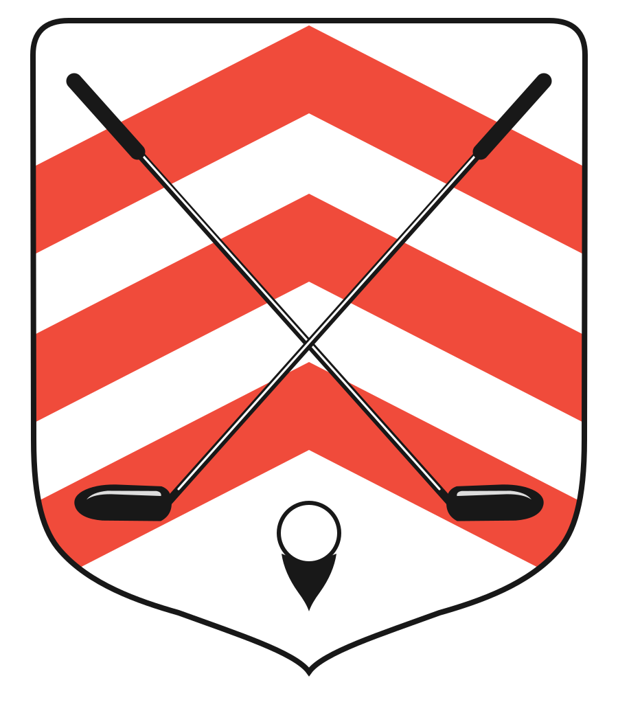

Pigeard Opticiens · depuis 1863
&

Golf du Perche · Souancé-au-Perche
Compétition caritative · Octobre Rose · MMXXVI
Golf du Perche · Souancé-au-Perche · Formule scramble
Octobre Rose · Compétition caritative
Trophée
ensemble, contre le cancer du sein
Samedi 10 octobre 2026
Golf du Perche · Souancé-au-Perche
La compétition
la journée
18 trous
formule scramble,
au Golf du Perche
La musique
l’après-midi & le soir
Humani
en concert pop-rock, et DJ jusqu’au bout de la soirée
Le dîner
le soir
25 €
blanquette de veau, tarte fine aux pommes
Sur réservation
Les dons seront reversés à l’association Octobre Rose
Compétition — inscription à l’accueil du golf · 02 37 29 17 33 · golfduperche@wanadoo.fr
Dîner — réservation au restaurant du golf, Le Green · 02 37 29 10 29 · 06 63 41 46 88
Pigeard Opticiens · depuis 1863
&

Golf du Perche · Souancé-au-Perche